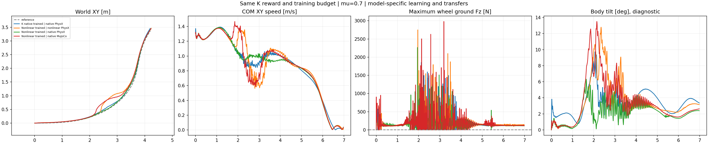

The new policy does not qualify the complete original nominal task across these validation plants. Failed gates are retained in the table; training completion does not establish stable contact.
Four actual 6.98 s recordings at μ=0.7. Left: published K PPO trained and evaluated with native PhysX friction. The other three panels share one new, fully trained normalized actor: matched nonlinear PhysX, native-friction PhysX transfer, and native-friction CPU MuJoCo transfer. Body, wheel rolling-plane and velocity headings are shown. One common camera distance and world angles are fixed across cases and time; only translation follows the robot. Original opaque poses/heights and a shared world-XY scale are retained.
| Policy / validation plant | Core XY RMSE(m) | Core speed retained(%) | Core β RMSE(°) | Any-wheel support(%) | Longest gap(ms) | HF/original PPO | Core max tilt(°) | Failed gates |
|---|---|---|---|---|---|---|---|---|
| K native trained | native PhysX | 0.0816 | 98.10 | 3.77 | 89.52 | 45.0 | 0.614 | 9.73 | any_wheel_every_physical_sample, longest_no_support_gap |
| Nonlinear trained | nonlinear PhysX | 0.1872 | 98.85 | 20.65 | 93.27 | 50.0 | 0.682 | 12.80 | core_xy_rmse, core_xy_peak, whole_xy_peak, core_reference_beta, any_wheel_every_physical_sample, longest_no_support_gap |
| Nonlinear trained | native PhysX | 0.0444 | 98.87 | 3.88 | 90.93 | 60.0 | 0.627 | 6.32 | any_wheel_every_physical_sample, longest_no_support_gap |
| Nonlinear trained | native MuJoCo | 0.1778 | 98.98 | 18.81 | 84.95 | 62.5 | 0.802 | 13.51 | core_xy_rmse, core_xy_peak, whole_xy_peak, core_reference_beta, any_wheel_every_physical_sample, longest_no_support_gap, core_HF_reduction |
Core:1.44–4 s. Support:0.02–6.96 s. Every actual 2.5 ms sample must have at least one ground-filtered wheel normal force>5 N; the other wheel may lift. Required support fraction100%, longest gap0. Core/whole XY RMSE≤0.15 m and peak≤0.30 m, core speed ratio0.95–1.10, intended nonzero reference β RMSE≤10°, and core10–100 Hz angular-XY RMS≤0.7 of the original same-engine baseline. All nine gates are independently recomputed. No height/flight gate or new zero-slip target is introduced. Body tilt and nonwheel contact are diagnostics; wheel loading after falling cannot demonstrate successful turning.
Nonlinear trained | nonlinear PhysX. No persistent nonwheel-ground force above 1 N was observed. All four inspected poses remain upright. At 3.00 s, speed/reference is 0.62 and body beta is -55.3 degrees despite 8/8 supported substeps. Early outward path deviation and the large within-core slowdown are visible in the recorded plots. Improved aggregate support does not establish successful turning.
Nonlinear trained | native PhysX. No persistent nonwheel-ground force above 1 N was observed. Upright in all inspected poses and closest recorded XY tracking. At 2.24 and 3.00 s the displayed XY errors are 0.030 and 0.065 m. This does not remove the native-record 60 ms longest support gap.
Nonlinear trained | native MuJoCo. No persistent nonwheel-ground force above 1 N was observed. Upright in the inspected poses, with outward path deviation and speed loss in the core. At 4.00 s both displayed wheel loads are zero and 0/8 substeps are supported despite an upright body. At 6.96 s both wheels bear load and the reference is stopped.

The new policy completed512×24×1000=12,288,000 transitions from the same seed-42 initial network as K. The K contact reward and other14 reward terms, β+2, action-rate−0.5,500/10 DC-motor leg PD, limits, observations, reference,400 Hz physics and50 Hz control are unchanged. Original cylinders, masses, COM and inertia remain. The new variable is wheel-ground tangential force, implemented with the batched nonlinear combined-slip curve.
Native wheel static/dynamic friction is zero; native normal contact remains. The original startup μ draw[0.3,1.2], shared by both wheels in each world, supplies external force capacity μFz. Encoder, COM and push randomization retain their existing settings. Parameters B=4.5,C=1.8,E=1 and0.2 m/s regularization are sensitivity assumptions, not identified TRON1 tire data. Native static adhesion, tire elasticity and a full vehicle tire model are not claimed. The external law uses the preceding physical sample's load and contact point, with a2.5 ms coupling delay. Reset worlds have zero external force on their first physical application.
The retained NumPy law recomputes every loaded GPU force and COM moment from the recorded kinematics. Maximum differences: 0.0002229021 N and 2.681341e-05 Nm, within the declared float32 tolerances. Native tangential friction after the initial pre-substitution buffer remains below0.001 N. No-load external forces and moments are exactly zero. Contact energy evaluated at the preceding contact point is -404.96 J.
52 core wheel applications retain external force>0.001 N while the following physical sample has wheel Fz≤5 N. This explicitly exposes delayed force/contact coupling; it is not evidence of instantaneous contact-law equivalence. Used-load aggregate utilization and left/right loaded hub angles/contact velocities are in the JSON. They do not identify pointwise friction cones or sensor-measured tire slip angles. Body β, wheel-hub angle and patch sliding remain distinct.
This is one seed and one nominal episode per plant. The native PhysX-to-MuJoCo transfer changes both the engine and tangential law; it cannot isolate the solver alone. The earlier frozen-policy external-Coulomb control remains a coupling sensitivity reference; a newly trained external-Coulomb control has not been added here. No friction sweep or weight tuning was performed during validation.
21 training/kernel/lifecycle/export tests and9 independent force/reference/collection guards passed. Completed formal training/export and native model readbacks were verified on the execution host. The collection excludes weights, model assets, credentials and native libraries. Numeric replay reproduces the reported metrics and all350 video frames decode. Stills2.24/3.00/4.00/6.96 s were inspected; full manual video playback is not claimed. All owned training and nominal evaluation jobs are terminal.
An earlier12,288,000-transition attempt was rejected at the CPU/GPU export comparison and never admitted to nominal validation. Its CPU export exactly matches its final checkpoint, but the live final contact-health audit was not persisted. The corrected repetition records native health before export, compares the export with independent CPU source modules, and separately checks full-FP32 GPU error against the existing absolute1e-4 cap. Training precision, rewards, hyperparameters and task gates are unchanged. This implementation repair adds12,288,000 discarded training transitions to the accepted attempt's12,288,000; it is disclosed compute overhead, not policy selection using nominal performance. See the first attempt and numerical diagnosis.
All metrics and applied-force analysis · Formal training/export proof · Three completed episodes · Completed evidence hashes · Video/camera/numerical verification · Inspected stills and notes.
Protocol · Trainer · Batched runtime · Read-only analyzer · Recorded-pose renderer. Exact existing-environment commands are preserved in the collected launch records. Earlier dated startup evidence and separate nine-slice training remain unchanged.